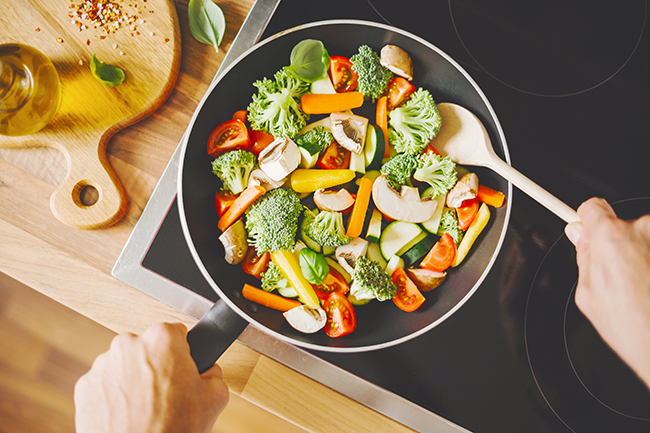

1-Ravioles Caseros con Relleno de Ricotta y Espinacas
Ingredientes:
- 300g de harina de trigo
- 3 huevos
- 200g de ricotta
- 100g de espinacas cocidas y picadas
- 50g de queso parmesano rallado
- Sal y pimienta al gusto
- Salsa de tomate o crema para acompañar
Instrucciones:
- Masa de pasta: Haz un volcán con la harina y pon los huevos en el centro. Mezcla y amasa hasta obtener una masa suave. Deja reposar 30 minutos.
- Relleno: Mezcla la ricotta con las espinacas, el parmesano, sal y pimienta.
- Formar los raviolis: Estira la masa en láminas finas, coloca cucharaditas del relleno, cubre con otra lámina y corta los raviolis.
- Cocción: Hierve en agua con sal durante unos 3 minutos. Sirve con la salsa de tu preferencia.
4-Pollo al vino tinto
Ingredientes:
- 1 pollo entero troceado
- 750 ml de vino tinto (preferiblemente un Borgoña)
- 200 g de champiñones
- 150 g de tocino en tiras
- 2 zanahorias
- 2 cebollas pequeñas
- 2 dientes de ajo
- 1 hoja de laurel
- 1 ramita de tomillo
- Sal, pimienta y aceite de oliva
- 2 cucharadas de harina
Instrucciones:
- Marinar el pollo: La noche anterior, marinar el pollo en el vino tinto con las zanahorias, las cebollas, el ajo, el laurel y el tomillo.
- Cocinar el pollo: Retira el pollo de la marinada, seca y dora en una sartén con aceite. Agrega el tocino y los champiñones.
- Cocción final: Añade la marinada y cocina a fuego lento durante 2 horas, hasta que el pollo esté tierno. Espesa la salsa con un poco de harina diluida en agua si es necesario
2-Tarta de Hojaldre con Crema Pastelera y Frutas
Ingredientes:
- 1 lámina de hojaldre
- 500 ml de leche
- 4 yemas de huevo
- 100 g de azúcar
- 40 g de maicena
- 1 cucharadita de esencia de vainilla
- Frutas frescas (fresas, kiwis, moras, etc.)
- Azúcar glas para decorar
Instrucciones:
- Cocción del hojaldre: Estira la lámina de hojaldre y hornéala hasta que esté dorada.
- Crema pastelera: Calienta la leche con la vainilla. Bate las yemas con el azúcar y la maicena, luego agrega la leche caliente y cocina hasta espesar.
- Montaje: Extiende la crema sobre el hojaldre ya frío y coloca las frutas por encima.
- Decoración: Espolvorea con azúcar glas antes de servir.

5-Cordero en Costra de Hierbas
Ingredientes:
- 1 costillar de cordero
- 2 dientes de ajo
- 1 manojo de perejil fresco
- 1 manojo de romero fresco
- 1 manojo de tomillo fresco
- 50g de pan rallado
- 50g de mostaza de Dijon
- Aceite de oliva, sal y pimienta
Instrucciones:
- Preparar el cordero: Sella el costillar en una sartén caliente hasta dorar. Sazona con sal y pimienta.
- Costra de hierbas: Mezcla el pan rallado con el ajo, el perejil, el romero y el tomillo picados finamente. Añade un poco de aceite de oliva.
- Cubrir el cordero: Unta el cordero con mostaza de Dijon y presiona la mezcla de hierbas sobre la carne.
- Hornear: Hornea a 200°C durante 20-25 minutos o hasta que esté cocido a tu gusto.
3-Paella de Mariscos
Ingredientes:
- 400g de arroz bomba
- 1L de caldo de pescado
- 200g de mejillones
- 200g de gambas
- 150g de calamares
- 1 pimiento rojo
- 2 dientes de ajo
- 1 cebolla
- Azafrán, pimentón, sal y pimienta
- Aceite de oliva
Instrucciones:
- Preparar los mariscos: Limpia los mejillones, pelar las gambas y corta los calamares en anillas.
- Sofrito: Sofríe el ajo, la cebolla y el pimiento picado. Añade el arroz, el pimentón y el azafrán, y remueve.
- Cocción del arroz: Añade el caldo caliente y cocina a fuego medio. A mitad de cocción, incorpora los mariscos.
- Reposo: Deja reposar la paella 5 minutos antes de servir.
6-Risotto de Trufa y Parmesano
Ingredientes:
- 300g de arroz arborio
- 1 litro de caldo de pollo o verduras
- 100 ml de vino blanco
- 1 cebolla pequeña
- 50g de mantequilla
- 50g de queso parmesano rallado
- 1 trufa negra rallada o aceite de trufa
- Sal y pimienta
Instrucciones:
- Sofrito: Sofríe la cebolla en mantequilla a fuego lento.
- Cocción del arroz: Añade el arroz y remueve durante 2 minutos. Vierte el vino y deja evaporar.
- Añadir el caldo: Poco a poco añade el caldo caliente mientras remueves constantemente. Cocina unos 18 minutos.
- Terminar con trufa: Cuando el arroz esté cremoso, incorpora el parmesano y la trufa rallada. Rectifica de sal y pimienta.